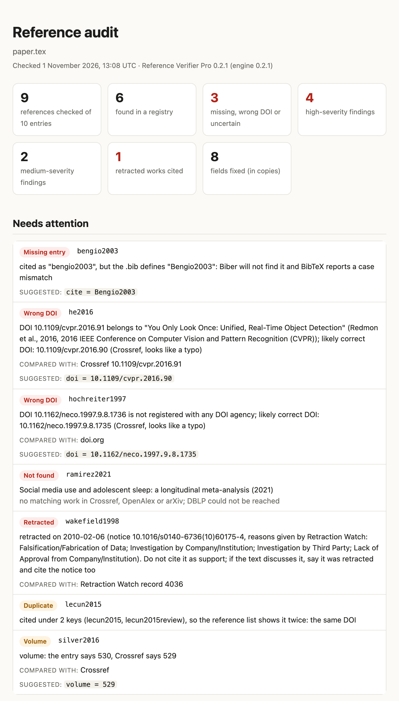
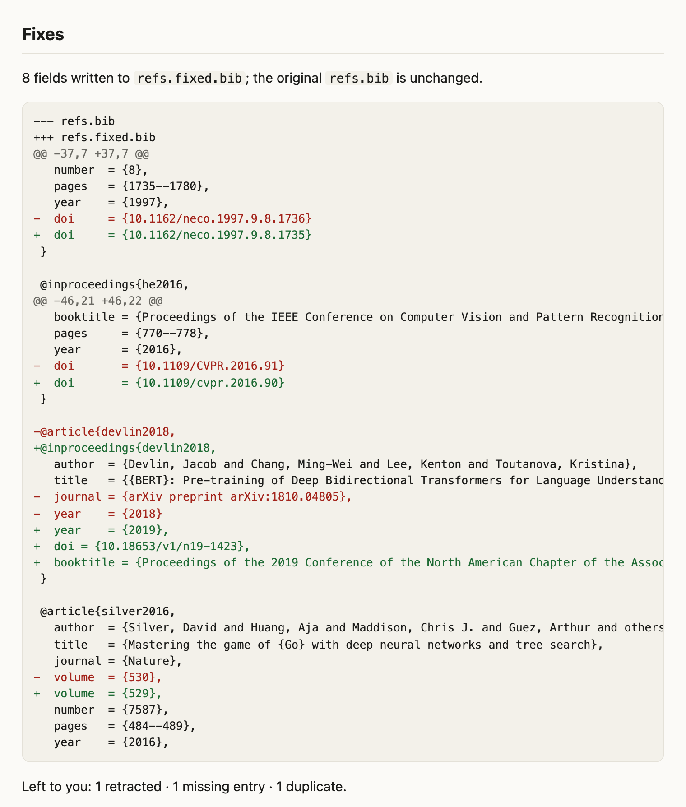
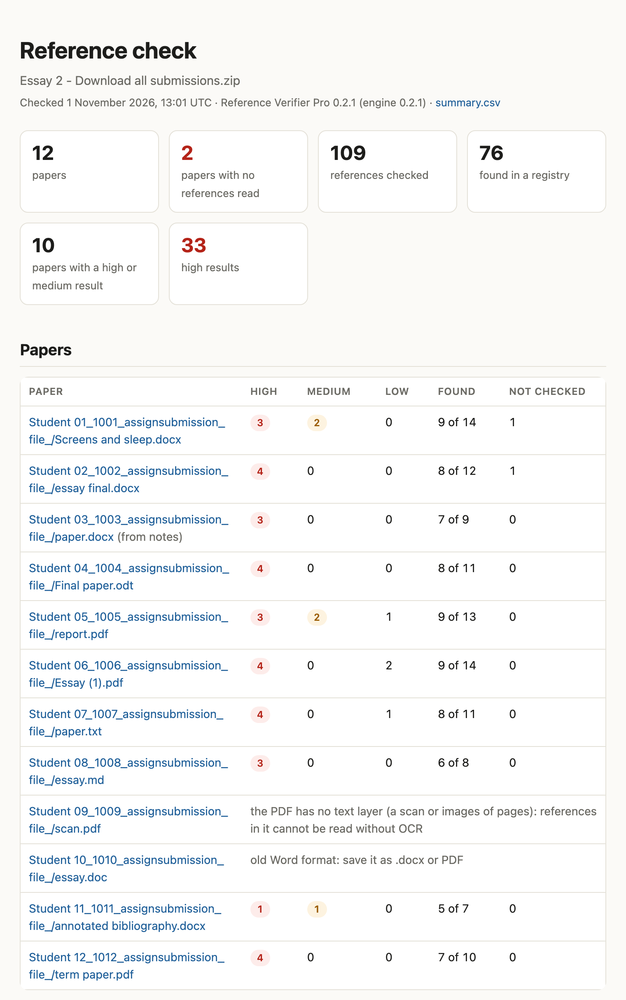
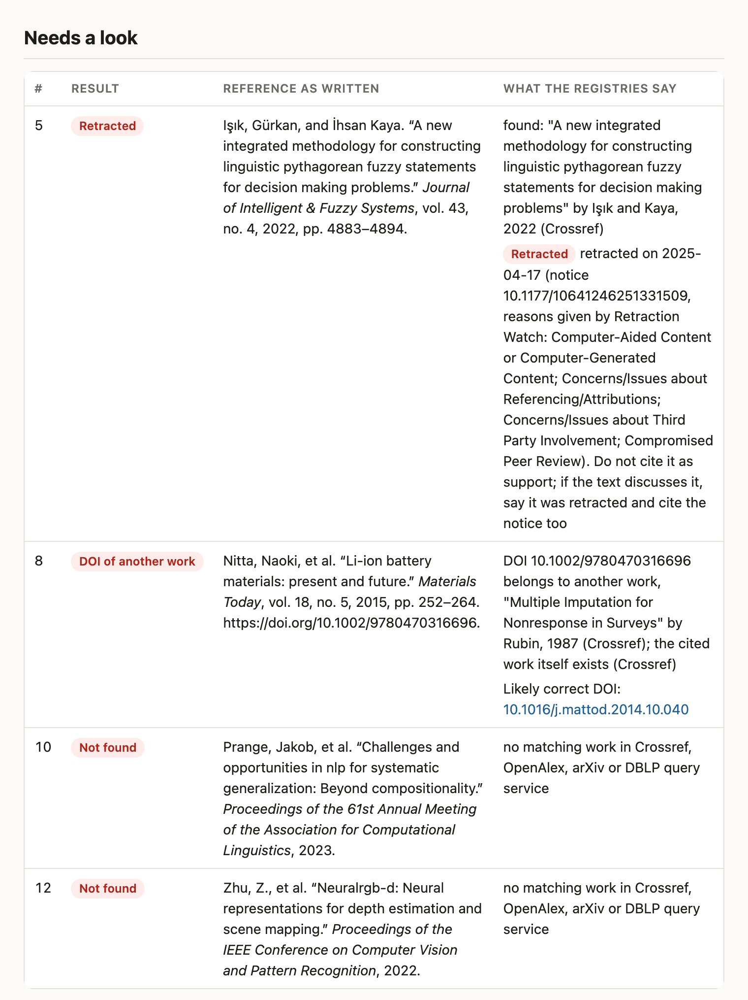

What it checks
Reference Verifier reads your .bib file, or your LaTeX paper and the bibliography it uses, and looks every
cited entry up in Crossref, OpenAlex, DBLP, arXiv and PubMed. The free core answers one question: does each reference
exist as written? Pro checks each one against the publisher's record and the retraction databases, and fixes what the
record settles.
| Check | Free core | Pro |
|---|---|---|
| References no registry lists (invented papers, garbled titles) | Yes | Yes |
| DOIs that are not registered, or belong to another paper | Yes | Yes, with the likely correct DOI |
| Retracted, withdrawn and corrected papers, expressions of concern | — | Yes: Crossref's notices and the Retraction Watch database |
| Authors, year, venue, pages, volume and issue against the publisher's record | — | Yes |
| The same work under two keys; cite keys that are missing, mistyped or unused | — | Yes |
| Preprints that have since been published | — | Yes, with the DOI and venue to cite |
A corrected copy of your .bib and a diff to review (--fix) | — | Yes |
| A dated HTML audit report to keep or share | — | Yes |
A class's papers (.docx, .odt, PDF, text, Markdown) in any citation style | — | Yes |
| Source support: the passages of each open-access cited work that best match your sentence | — | Yes |
| Pre-commit hook, GitHub Actions annotations, a SKILL.md and read-only MCP tools for your agent | — | Yes |
| Licence | MIT, free | Licence key, from $24 |
A real run
A ten-entry demo paper with eight planted problems: a DOI with a typo, ResNet cited with the DOI of the paper next to it (YOLO), an invented paper, Wakefield's 1998 Lancet paper (retracted in 2010), one paper under two keys, a wrong volume, a 2018 arXiv preprint that has since been published, and a cite key typed in the wrong case. Download it and run it yourself: paper.tex, refs.bib.
Both runs below used the released 0.2.1 builds and an empty cache, on 1 November 2026. DBLP's search was turning automated requests away that day; the tool says so and carries on with the other registries. 0.2.2 changes only how the tools are installed; rerun on this paper, it gives the same results.
Free core: 4 seconds
$ refverify paper.tex
Reference Verifier 0.2.1: 9 references from refs.bib
6 found · 1 not found · 1 wrong DOI · 1 unregistered DOI
WRONG DOI he2016 Deep Residual Learning for Image Recognition (2016)
DOI 10.1109/cvpr.2016.91 belongs to a different work: "You Only Look Once: Unified, Real-Time Object Detection"; the cited work itself exists (found in Crossref)
BAD DOI hochreiter1997 Long Short-Term Memory (1997)
DOI 10.1162/neco.1997.9.8.1736 is not registered; the work itself exists (found in Crossref), so the DOI is wrong
NOT FOUND ramirez2021 Social media use and adolescent sleep: a longitudinal meta-analysis (2021)
no matching work in Crossref, OpenAlex or arXiv; DBLP could not be reached
Not found means no registry lists a matching work. Check those entries by hand before
changing anything: books, theses, reports and very new papers are often missing.
Requests: api.crossref.org 11, api.openalex.org 1, dblp.org 1, doi.org 1, export.arxiv.org 2 (repeat runs use the local cache)
Three of the eight problems are about existence, and the free core flags all three. The other five are not: Wakefield 1998 exists (it was retracted), and so do the duplicated paper, the paper with the wrong volume, the preprint and the entry behind the mistyped key.
Pro: 10 seconds, all eight

--html: every high and medium problem, the record it was compared with, and the value to use.
--fix --fix-published wrote refs.fixed.bib and this diff (refs.fix.diff); refs.bib itself was not touched. The retraction, the duplicate and the key are left to you.Open the whole audit report (every reference, the sources consulted and the input files with their SHA-256).
The terminal output
$ refverify-pro paper.tex --fix --fix-published --html audit.html --json pro.json
refverify-pro: Downloading the Retraction Watch database from Crossref (about 70 MB, at most once a day)
Reference Verifier Pro 0.2.1: 9 references from refs.bib (cited in paper.tex)
Existence: 6 found · 1 not found · 1 wrong DOI · 1 unregistered DOI
Notices: 1 retracted
Field checks: 2 wrong DOI · 1 missing entry · 1 duplicate · 1 volume · 1 published version
BAD DOI hochreiter1997 Long Short-Term Memory (1997)
DOI 10.1162/neco.1997.9.8.1736 is not registered with any DOI agency; likely correct DOI: 10.1162/neco.1997.9.8.1735 (Crossref, looks like a typo)
WRONG DOI he2016 Deep Residual Learning for Image Recognition (2016)
DOI 10.1109/cvpr.2016.91 belongs to "You Only Look Once: Unified, Real-Time Object Detection" (Redmon et al., 2016, 2016 IEEE Conference on Computer Vision and Pattern Recognition (CVPR)); likely correct DOI: 10.1109/cvpr.2016.90 (Crossref, looks like a typo)
entry DOI 10.1109/cvpr.2016.91 points to
title Deep Residual Learning for Image Recognition You Only Look Once: Unified, Real-Time Obje…
authors He, Zhang, Ren, Sun Redmon, Divvala, Girshick, Farhadi
year 2016 2016
venue Proceedings of the IEEE Conference on Compu… 2016 IEEE Conference on Computer Vision and…
NOT FOUND ramirez2021 Social media use and adolescent sleep: a longitudinal meta-analysis (2021)
no matching work in Crossref, OpenAlex or arXiv; DBLP could not be reached
RETRACTED wakefield1998 Ileal-lymphoid-nodular hyperplasia, non-specific colitis, and pervasive develop… (1998)
retracted on 2010-02-06 (notice 10.1016/s0140-6736(10)60175-4, reasons given by Retraction Watch: Falsification/Fabrication of Data; Investigation by Company/Institution; Investigation by Third Party; Lack of Approval from Company/Institution). Do not cite it as support; if the text discusses it, say it was retracted and cite the notice too
DUPLICATE lecun2015 Deep learning (2015)
cited under 2 keys (lecun2015, lecun2015review), so the reference list shows it twice: the same DOI
VOLUME silver2016 Mastering the game of Go with deep neural networks and tree search (2016)
volume: the entry says 530, Crossref says 529
PUBLISHED devlin2018 BERT: Pre-training of Deep Bidirectional Transformers for Language Understanding (2018)
[low] the arXiv preprint was published in Proceedings of the 2019 Conference of the North American Chapter of the Association for Computational Linguistics: Human Language Technologies, Volume 1 (Long and Short Papers), DOI 10.18653/v1/n19-1423; cite the published version (found through a Crossref search)
Citations
NO ENTRY bengio2003 cited as "bengio2003", but the .bib defines "Bengio2003": Biber will not find it and BibTeX reports a case mismatch (paper.tex:7)
Not found means no registry lists a matching work. Check those entries by hand before
changing anything: books, theses, reports and very new papers are often missing.
Field findings compare each entry with the publisher's record (Crossref, by DOI) or the
registry that found it; the suggested values are what that record says.
Retractions and corrections: Crossref's notices and the Retraction Watch database (copy of 2026-11-01, 73,519 records).
DBLP stopped answering during this run and was skipped; rerun later to include it.
Requests: api.crossref.org 14, api.openalex.org 1, dblp.org 2, doi.org 1, export.arxiv.org 2 (repeat runs use the local cache)
Fixes: 8 fields in 4 entries (3 corrected, 5 turned into published versions) -> refs.fixed.bib; review refs.fix.diff
Left to you: 1 retracted · 1 missing entry · 1 duplicate (see the entries above)
Audit report: audit.html
A class's papers
refverify-batch takes a folder, or the .zip your learning platform downloads, finds each
paper's reference list and looks up every reference as written, whatever the citation style.


Open the class summary. This class is synthetic: twelve papers we made in
.docx, .odt, PDF, text and Markdown, plus a scan and an old .doc, zipped the way
Moodle downloads submissions. Their references come from our development data, in six citation styles: real ones,
invented ones taken from public compilations of hallucinated citations, wrong DOIs and retracted papers. It shows what
you get, not how accurate the tool is; the next section does that.
How well it works
Every number here comes from a held-out set: references collected and labelled by an independent agent that never ran the tool, with no overlap with the data the rules were tuned on, scored once with no changes afterwards. Intervals are 95% Wilson intervals. Measured with 0.2.0; 0.2.1 changes only how output is shown, and 0.2.2 only how the tools are installed.
Free core: does each reference exist?
| Measure | Result | 95% CI |
|---|---|---|
| Real references found | 94 of 95 | 94.3–99.8% |
| Fabricated references flagged | 54 of 54 | 93.4–100% |
| Wrong DOIs flagged as a DOI problem | 30 of 30 | 88.6–100% |
| Retracted papers found (they exist; flagging the retraction is Pro's job) | 35 of 35 | 90.1–100% |
| Precision: flags that were on a fabricated or wrong-DOI entry | 84 of 85 | 93.6–99.8% |
- 246 references. The real ones were drawn across computer science, biomedicine, physics, mathematics, the social
sciences and the humanities, written the messy ways real
.bibfiles are. - The one real reference it missed is a DOI-less ICLR 2022 paper that only DBLP indexes; DBLP's search turned the tool away during the run.
- The fabricated references come from public compilations of hallucinated citations found in ACL-family papers and ICLR 2026 submissions, so all 54 are computer science. "Fabricated" means listed there and found neither in any registry nor by a web search for the exact title.
- Sources, licences and labelling rules: HELDOUT.md; rerun it with the command in the README.
Pro: field checks, notices, duplicates, keys
| Check | Result | 95% CI |
|---|---|---|
| Wrong pages, volumes and issues reported with the publisher's value | 40 of 40 | 91–100% |
| Wrong year or first author reported | 16 of 16 | 81–100% |
| Wrong venue reported | 6 of 8 | 41–93% |
| Wrong title words reported | 7 of 8 | 53–98% |
| Wrong DOI: the likely correct DOI offered | 28 of 30 | 79–98% |
| Preprints linked to their published version | 13 of 14 | 69–99% |
| Retractions, expressions of concern, corrections and notice DOIs exactly right | 34 of 34 | 90–100% |
| Retracted papers cited with their DOI: retraction reported | 35 of 35 | 90–100% |
| Clean look-alikes of retracted papers left alone | 5 of 6 | 44–97% |
| Duplicates and look-alikes told apart | 10 of 10 | 72–100% |
| Cite-key cases (missing, mistyped, case-mismatched, unused) | 6 of 6 | 61–100% |
| Genuine entries given a medium-or-worse finding (false alarms) | 1 of 130 | 0–4% |
| Fabricated entries given field findings | 0 of 54 | 0–7% |
--fix on the same items restored 40 of 40 pages, volumes and issues, 28 of 30 DOIs and 12 of 14
published versions, and changed 1 of 130 genuine entries it should have left alone.
Pro: a class's reference lists
| Reference strings | Result | 95% CI |
|---|---|---|
| Real references found | 59 of 60 | 91–99.7% |
| Real references given a high result | 0 of 60 | 0–6% |
| Fabricated references flagged (19 high, 5 medium) | 24 of 25 | 80–99% |
| Wrong DOIs reported as the DOI of another work | 10 of 10 | 72–100% |
| Retracted papers found and reported retracted | 10 of 10 | 72–100% |
| A real title with invented authors reported as "other authors" | 7 of 8 | 53–98% |
- 120 reference strings: 60 real ones copied from open-access articles' reference lists (Vancouver, APA, Harvard, Chicago, IEEE, Nature and ACS styles) and constructed ones checked absent from every registry.
- Misses: a real reference with a typo in its author's name (reported as other authors), an invented title matched to a real paper with a longer title, and a web page written like an article, which got a high "not found".
- Small sets: one item moves a rate by several points; the intervals say how much.
Install and use
Free core
pip install reference-verifier
refverify refs.bib # every entry in a .bib
refverify main.tex # only the keys main.tex cites
refverify main.tex --json out.json # machine-readable results tooPython 3.10 or newer. The exit status is 1 when a journal or conference reference is missing or has a bad DOI, so
it can gate a script or a CI job. Set REFVERIFY_MAILTO to your email for Crossref's and PubMed's polite
pools, and OPENALEX_API_KEY (free at openalex.org) for your own OpenAlex budget. Source and issues:
GitHub; package: PyPI.
Pro
| Licence | For | Computers | Price |
|---|---|---|---|
| Personal | one person, for their own work | 3 | $24 |
| Course | one instructor, for checking their students' work | 3 | $99 |
| Lab | one research group | 10 | $149 |
Every licence includes all of Pro, a licence key, and 12 months of updates. You get a zip with the Python wheel, a quickstart, the full guide and the licence terms. Pick the licence at checkout:
pip install reference_verifier_pro-0.2.2-py3-none-any.whl # also installs the free core from PyPI
refverify-setup licence activate <KEY>
refverify-pro paper.tex # every check, cited entries only
refverify-pro paper.tex --fix --html audit.html
refverify-batch "Essay 2 - Download all submissions.zip"
refverify-support paper.tex # source support: an evidence packThe key is checked with the store that sold it, then once a week; offline, Pro keeps working for 30 days from the last check. Only the key, the store's product id and a random install id are sent.
In your workflow
- Before each commit.
refverify-setup hookinstalls a git pre-commit hook that checks only the.bibentries a commit adds or changes, in seconds, and stops the commit on a wrong DOI, a reference no registry lists, a retracted paper or an undefined key. Offline, it says so and lets the commit through. - On every pull request.
refverify-setup ciwrites a GitHub Actions workflow: problems appear as annotations on the changed lines, the job summary lists them, and the audit report is kept with the run. - In your AI agent.
refverify-setup skillinstalls a SKILL.md that tells your agent when to check and how to report ("no registry lists it", never "fake"; fixes as copies you review), andrefverify-mcpgives it five read-only tools: the reference checks and source support.
What it sends where
- Titles, author names, years and identifiers from your bibliography go to the public registries: Crossref, doi.org,
OpenAlex, DBLP, arXiv and PubMed. Your
.texfiles and your papers' text never leave your machine. - Pro downloads the Retraction Watch database from Crossref's public repository at most once a day; retraction lookups are local. Batch mode sends each reference string, never the paper around it.
- Answers are cached for 30 days on your machine, and every registry gets polite request rates (arXiv: one request every three seconds, as it asks).
- Reports name files relative to your working folder and are dated in UTC, so you can share them.
Limits
- "Not found" means no registry lists it, not that it was invented: books, theses, reports, regional journals and very new papers are often missing. Check before you change anything.
- Registries make mistakes too; every finding names the record it was compared with.
- Many computer science venues publish without DOIs. When DBLP turns automated requests away, those papers can go unconfirmed for the run; the report says so.
- Batch mode reads PDFs with a text layer (no OCR) and common reference-list layouts; each report shows the list as
read, so a misread is visible. Web pages are not checked unless you ask for
--check-links. - Source support works only with open-access full texts, and ranks passages by shared words: it finds evidence for you or your agent to judge; it does not judge claims itself.